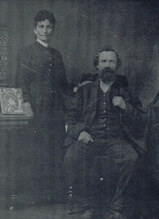

| Michael Burns was born July 4th, 1852 in French Park, Ros-Commons, Ireland. He immigrated to America some time before he wed fellow Irish immigrant Catherine Higgins. Together they made a home in Cazenovia, NY. Michael worked as a horse trainer and laborer. He died October 26, 1910. |
 |